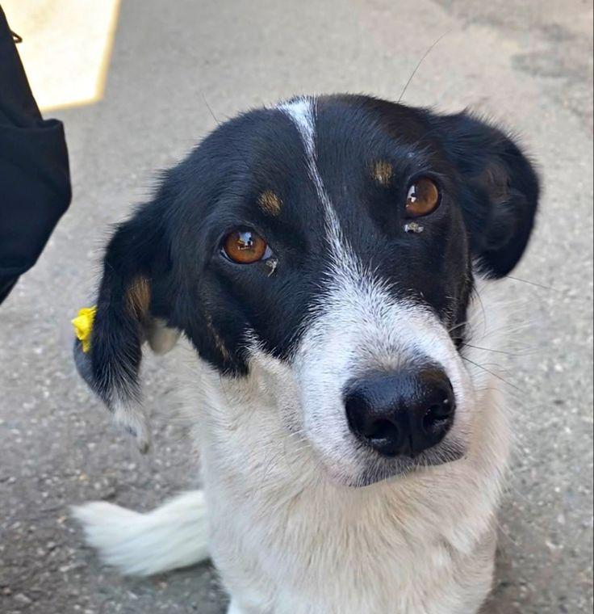
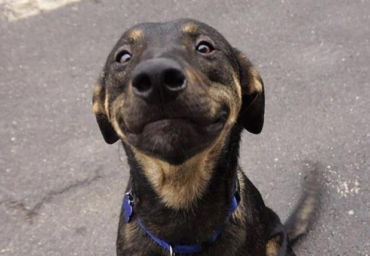

Perros y gatos buscando un hogar

Perro juguetón, 2 años, muy amigable.
Gatita tranquila, 1 mes, le encanta dormir.

Perro protector, 3 años, ideal para familia.
Gato curioso, 3 años, muy cariñoso.